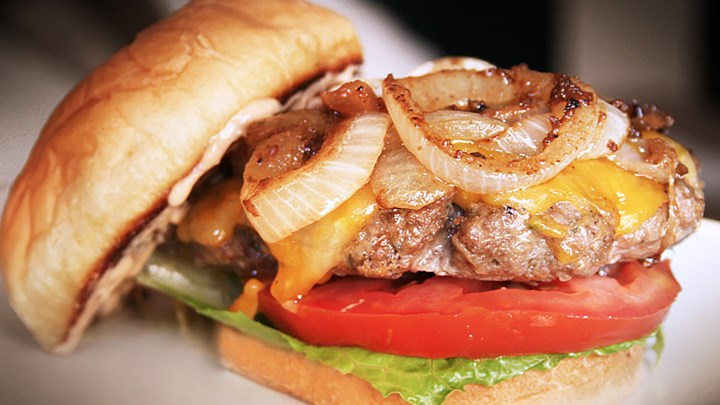

The list of ingredients needed:
- 1 1/2 pounds lean ground beef
-
- 1/2 onion, finely chopped
-
- 1/2 cup shredded Colby Jack or Cheddar cheese
-
- 1 teaspoon soy sauce
-
- 1 teaspoon Worcestershire sauce
-
- 1 egg
-
- 1 (1 ounce) envelope dry onion soup mix
-
- salt and pepper to taste
-
- 1/2 teaspoon crushed dried rosemary
-
- 1 teaspoon dried oregano
-
- 1 teaspoon dried parsley
-
- 1 teaspoon dried basil
-
- 1 tablespoon garlic powder
-
- 1 clove garlic, minced
-
The most demanded burger for it`s reputation
Steps to follow:
Preheat a grill for high heat
In a large bowl, mix together the ground beef, onion, cheese, soy sauce, Worcestershire sauce, egg, onion soup mix, garlic, garlic powder, parsley, basil, oregano, rosemary, salt, and pepper. Form into 4 patties.
Grill patties for 5 minutes per side on the hot grill, or until well done. Serve on buns with your favorite condiments.
Contact me